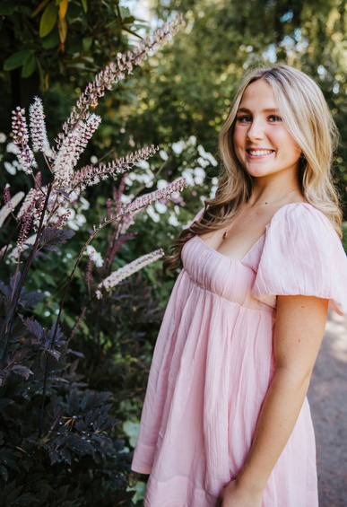
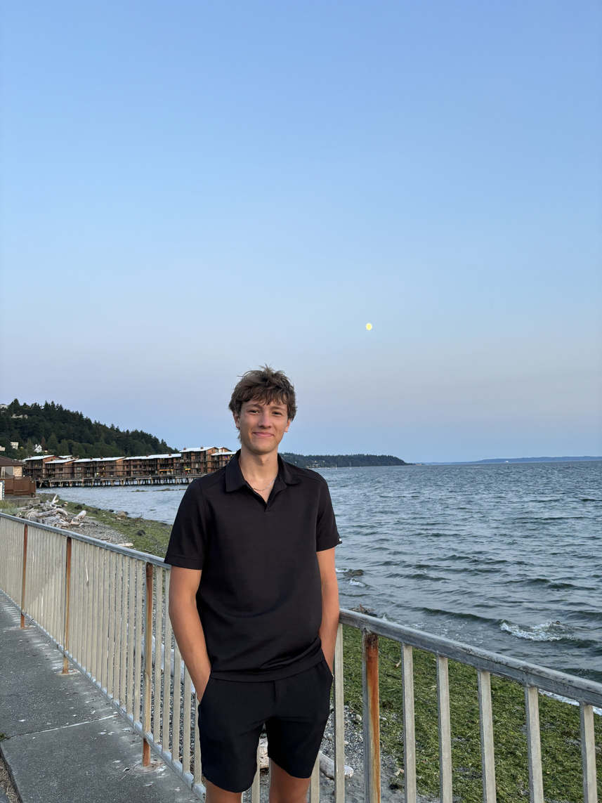
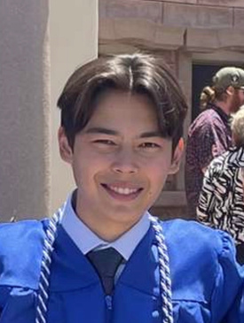

Student Reflections


What They Discovered
After the visit, each student reflected on their key takeaways from the Mariners — connecting the experience back to their own growth.
Paige Olson
"Presenting to a team of professionals, receiving real-time feedback, and engaging across departments pushed me to think more critically and communicate more intentionally. It challenged me to take ownership of my learning in a much deeper way. Your perspective — that failure is not something to avoid, but something to embrace — reframed how I think about challenges entirely."
Owen Hyatt
"Working in sports is pretty darn cool, but it is not all sunshine and rainbows. From hearing about amazing experiences with the Mariners to the individual struggles and journeys to get there — it was eye opening. Getting both sides of that story gave a much more honest and robust perspective than I expected."
Charles Herman
"The best jobs are often the ones that challenge you. It was clear from each person we interacted with that they had a deep passion for what they did — but each of them also talked about the challenges they face. Seeing how being challenged pushes you to do great things and be the best version of yourself was something I will carry forward."

Samantha Smith
"I loved when Brier said he had to learn through 'trial by fire' — he always said yes, even if he had no idea how to do something, and learned it. Frances was quick to say that more than 75% of the work is a challenge, and that she highlights failures rather than successes because without failure there is no growth. Sports is about creating experiences, and seeing that passion from everyone in the room made it feel like something worth working toward."

Eamon Mohrbacher
"Your job will be significantly better if you create a community with people you enjoy being around. Clear communication through the good and the bad is key — and finding ways to take a step back and regroup when things get challenging is just as important as pushing through."

Marcus Heppner
"This visit showed me how beneficial it is to approach new challenges with a willingness to learn — and that failure in the workspace can be a testament to growth and the ability to adapt. It is still important to find outlets during challenging times to stay grounded in who you are as a person."
Allison Kann
"My two favorite pieces of advice from the panel: when you are faced with a problem, 'figure it out' by leaning into it and leaning into others. And set yourself apart by focusing on the little things — remembering names, following up, fostering connections. Those two ideas alone changed how I think about entering a professional environment."